Find me on Instagram
Into the blue hour of the Arctic Circle Tromsø, Troms og Finnmark, Norway January 2, 2025
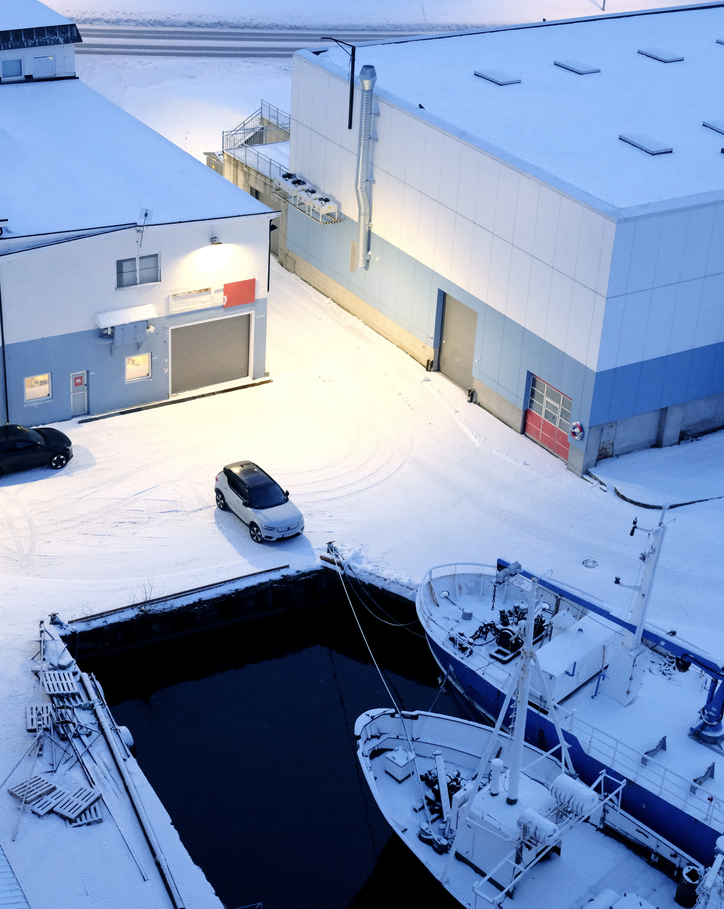
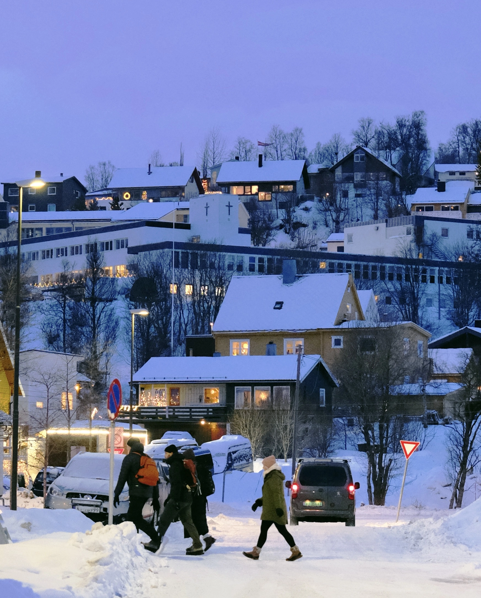
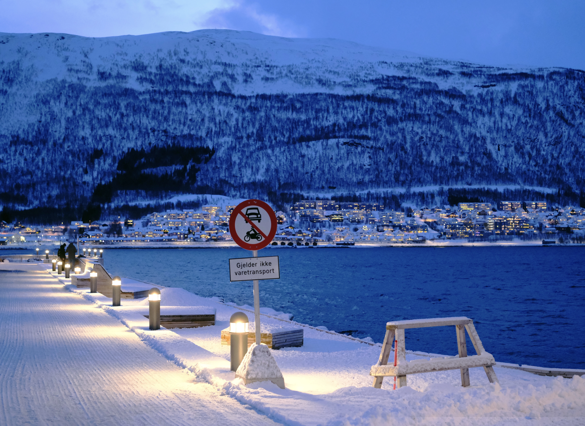
The fairytale world of the far north The Lofoten Archipelago, Norway December 27, 2024
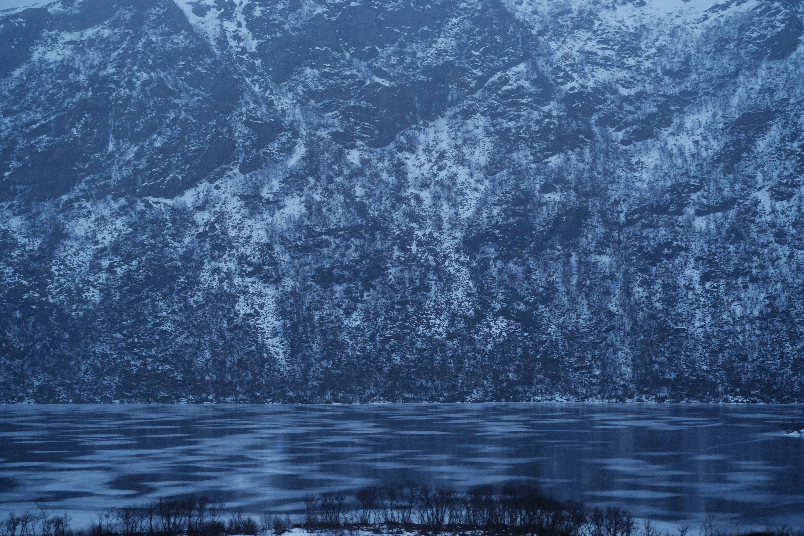
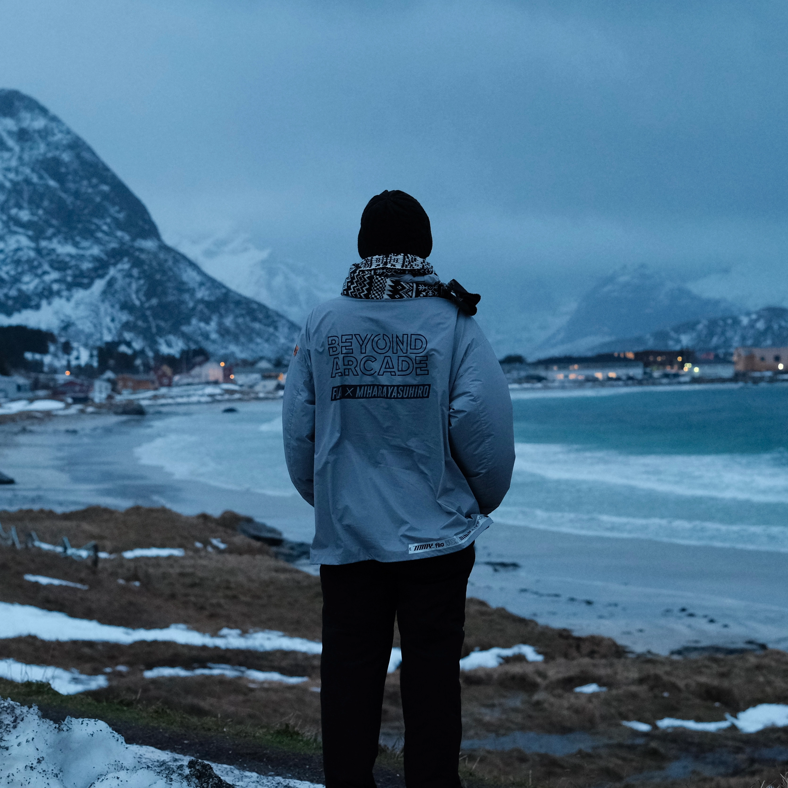
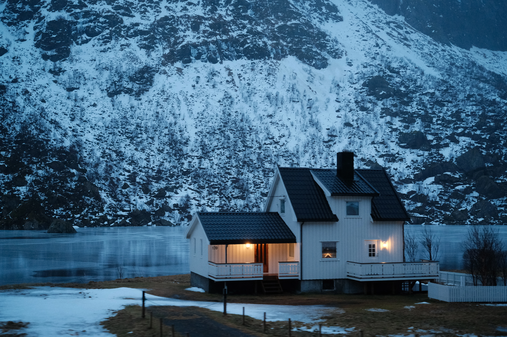
2024 Magistrale and IC Graduation Ceremony Lausanne, Vaud, Switzerland October 5, 2024
A rain turning a city upside down Venice, Veneto, Italy August 3, 2023
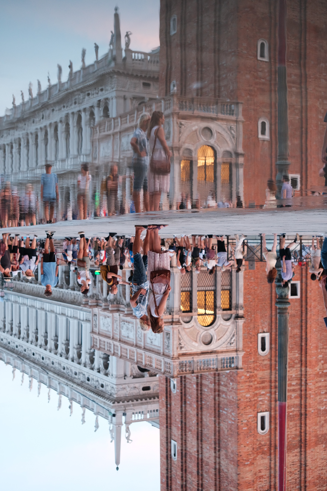
Lake Oeschinen Kandersteg, Bern, Switzerland July 30, 2023
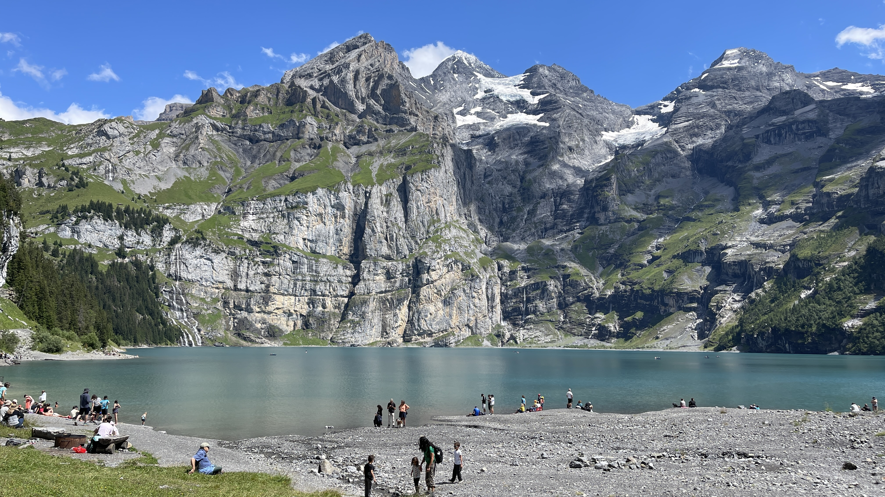
A vessel gliding across Lake Geneva Saint-Sulpice, Vaud, Switzerland February 13, 2023
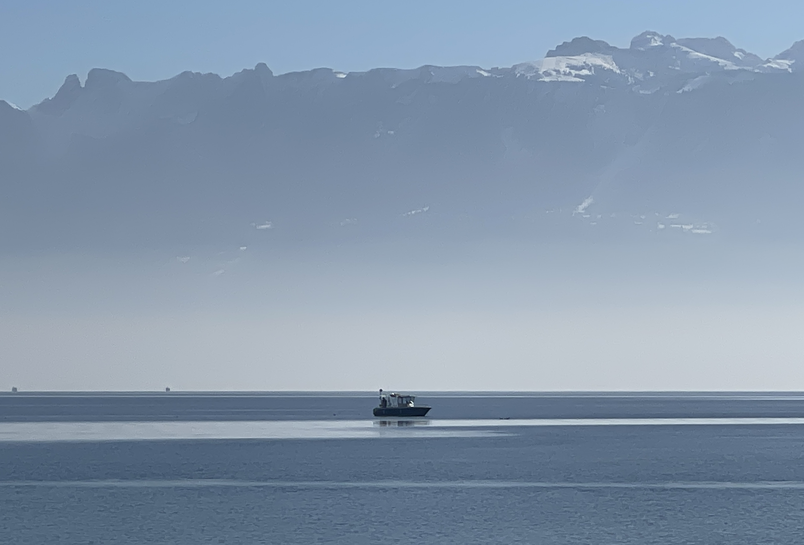
Pisa Cathedral and Leaning Tower of Pisa Pisa, Tuscany, Italy July 17, 2022
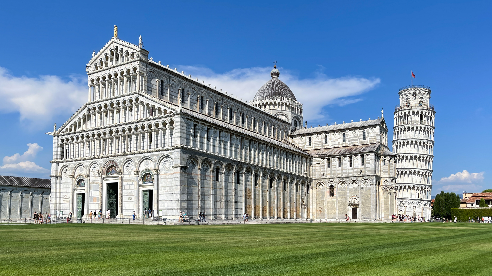
Ponte alle Grazie Florence, Tuscany, Italy July 16, 2022
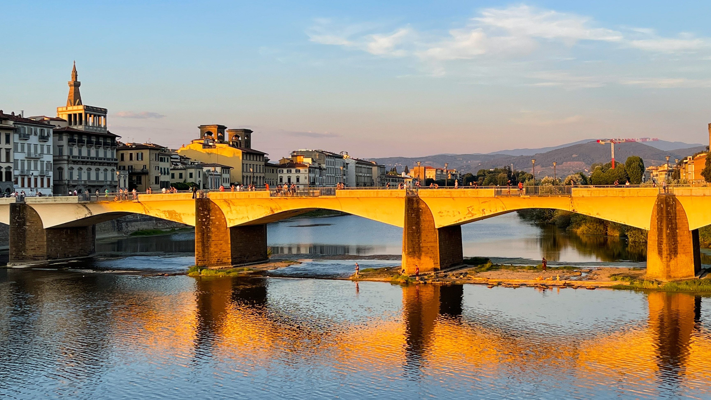
Nightfall in Rome Rome, Lazio, Italy July 14, 2022
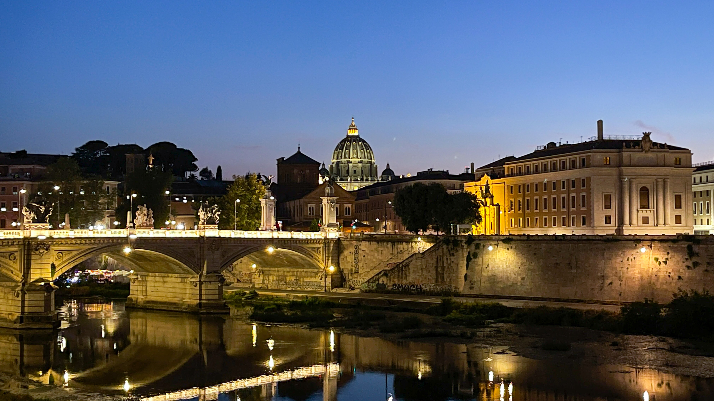